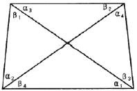
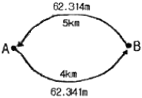
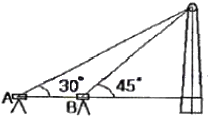
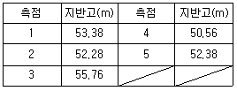

지적기사 (2015-03-08 기출문제)
1과목: 지적측량
1. 지적도근점측량의 배각법에서 종횡선 오차는 다음 중 어느 방법으로 배부하여야 하는가?
- 콤파스 법칙
- 트랜싯 법칙
- 해론의 법칙
- 오사오입 법칙
(정답률: 81%)

2. 종산좌표(X)=454600.37m, 횐선좌표(Y)=192033.25인 지적도근점을 포용하는 축척 1/600 인지적도의 좌측하단부 도곽선의 수치는?(오류 신고가 접수된 문제입니다. 반드시 정답과 해설을 확인하시기 바랍니다.)
- X=454300m, Y=192000m
- X=454400m, Y=191750m
- X=454600m, Y=192000m
- X=454600m, Y=191750m
(정답률: 62%)
3. 지적삼각점을 설치하기 위하여 연직각을 관측한 결과가 최대치는 +25° 42‘ 37“이고, 최소치는 +25° 42’ 32”일 때 옳은 것은?
- 최대치를 연직각으로 한다.
- 평균치를 연직각으로 한다.
- 최소치를 연직각으로 한다.
- 연직각을 다시 관측하여야 한다.
(정답률: 87%)
4. 사각망조정계산에서 (α1+β4)＞(α3+β2)일 때 오차배부방법으로 옳은 것은?

- α1과 β4에는 +로 배부하고 α3와 β2에는 -로 배부한다.
- α1과 α3에는 -로 배부하고 β4와 β2에는 +로 배부한다.
- α1과 β4에는 -로 배부하고 α3와 β2에는 +로 배부한다.
- α1과 α3에는 +로 배부하고 β4와 β2에는 -로 배부한다.
(정답률: 81%)
5. 미지점에서 평판을 세우고 기지점을 시준한 방향선의 교차에 의하여 그 점의 도상위치를 구할 때 사용하는 측량방법은?
- 전반교회법
- 원호교회법
- 측방교회법
- 후방교회법
(정답률: 80%)
6. 우리나라에서 지적도 제작에 사용한 투영 방식은?
- 가우스상사이중투영
- 가우스-쿼르거 투영
- WGS-84
- UTM 투영
(정답률: 84%)
7. 30m의 천줄자를 사용하여 A, B 두 점간의 거리를 측정하였더니 1.6km였다. 이 천줄자를 표준길이와 비교 검정한 결과 30m에 대하여 20mm가 짧았다. 올바른 거리는?
- 1601m
- 1599m
- 1597m
- 1596m
(정답률: 75%)
8. 교회법에 의하여 지적삼각보조점측량을 실시할 경우 수평각 관측의 윤곽도는?
- 0°, 45°, 90°
- 0°, 60°, 120°
- 0°, 90°
- 0°, 120°
(정답률: 66%)
9. 다음 중 온도에 따른 줄자의 신축을 팽창계수에 따라 보정한 오차의 조정과 관련이 있는 것은?
- 계통오차
- 착오
- 우연오차
- 과대오차
(정답률: 74%)
10. 다음 중 지적기준점측량의 실시 순서로 옳은 것은?
- 관측-선점-조표-계산
- 선점-조표-관측-계산
- 관측-조표-선점-계산
- 선점-관측-계산-조표
(정답률: 59%)
11. 지적측량에 사용하는 좌표의 원점 중 서부원점의 위치는?
- 북위 38도선과 동경 123도선의 교차점
- 북위 38도선과 동경 125도선의 교차점
- 북위 38도선과 동경 127도선의 교차점
- 북위 38도선과 동경 129도선의 교차점
(정답률: 79%)
12. 방위각 271° 30‘의 방위는?
- N 89° 30' E
- N 1°30' W
- N 88° 30' W
- N 90° W
(정답률: 76%)
13. 지적도 및 임야도에 등록하는 도관선의 용도가 아닌 것은?
- 토지경계의 측정기준
- 인접도면과의 접합측정기준
- 도관신축량의 측정기준
- 지적측량 기준점 전개시의 기준
(정답률: 45%)
14. 경위의측량방법으로 세부측량을 실시한 경우 측량대상토지의 경계점간 실측거리가 100.25m일 때, 이 거리와 경계점의 좌표에 의하여 계산한 거리의 교차는 최대 얼마 이내이어야 하는가?
- 11cm이내
- 12cm이내
- 13cm이내
- 14cm이내
(정답률: 60%)
15. 축척이 3천분의 1인 지역에서 등록전환을 하는 경우 면적이 2,500m2일 때 등록전환에 따른 오차의 허용범위로 옳은 것은?
- 79.35m2
- 101.40m2
- 158.70m2
- 202.80m2
(정답률: 42%)
16. 토지의 면적측정용 좌표면적계산법에 의하여 시행할 경우 맞는 것은?
- 도곽에 0.1밀리미터 이상의 신축이 있을 경우 보정하여야 한다.
- 평판측량방법으로 세부측량을 시행한 지역의 면적측정 방법이다.
- 산출면적은 100분의 1제곱미터까지 계산하여 10분의 1제곱미터 단위로 정한다.
- 경위의측량방법으로 세부측량을 한 지역의 필지별 면적측정은 경계점 좌표에 의하여 산출하여야 한다.
(정답률: 62%)
17. 배각법에 의한 지적도근점의 각도관측 시, 측각오차의 배분 방법으로 옳은 것은?
- 측선장에 비례하여 각 측선의 관측각에 배분한다.
- 측선장에 반비례하여 각 측선의 관측각에 배분한다.
- 변의 수에 비례하여 각 측선의 관측각에 배분한다.
- 변의 수에 반비례하여 각 측선의 관측각에 배분한다.
(정답률: 64%)
18. 지적삼각점측량을 할 때 사용하고자 하는 삼각점의 변동 유무를 확인하는 기준은?
- 기지각과의 오차가 ±30초 이내
- 기지각과의 오차가 ±40초 이내
- 기지각과의 오차가 ±50초 이내
- 기지각과의 오차가 ±1분 이내
(정답률: 83%)
19. 다음 중 지적도근점측량을 반드시 시행하여야 하는 지역은?
- 축척변경시행지역
- 대단위 합병지역
- 토지분할지역
- 소규모등록전환지역
(정답률: 71%)
20. 다음 중 경위의측량방법과 평판측량방법으로 세부측량을 할 때 측량준비 파일 작성에 공통적으로 포함하는 사항이 아닌 것은?
- 도곽선과 그 수치
- 행정구역선과 그 명칭
- 측량대상 토지의 지번 및 지목
- 인근 토지의 경계점의 좌표 및 경계선
(정답률: 53%)
2과목: 응용측량
21. 축척 1:50,000의 지형도에서 주곡선의 간격은?
- 1m
- 5m
- 10m
- 20m
(정답률: 80%)
22. GPS 신호에서 P코드의 1/10 주파수를 가지는 C/A코드의 파장 크기로 옳은 것은?
- 100m
- 200m
- 300m
- 400m
(정답률: 56%)
23. 초점거리 15cm, 사진크기 23cm×23cm인 카메라로 종중복 60%로 촬영한 평지연직사진의 축척이 1:10,000일 때 기선고도비는?
- 0.51
- 0.61
- 0.71
- 0.81
(정답률: 69%)
24. 터널 내 중심선 측량 시 도벨을 설치하는 주된 이유는?
- 중심말뚝간 시통이 잘되도록 하기 위하여
- 차량 등에 의한 기준점 파손을 막기 위하여
- 후속작업을 위해 쉽게 제거할 수 있도록 하기 위하여
- 측량 시 쉽게 발견할 수 있도록 하기 위하여
(정답률: 66%)
25. 반지름 100m의 단곡선을 설치하기 위하여 교각 I를 관측하였더니 60°이었다. 곡선시점과 교점 (I.P)의 거리는?
- 45.25m
- 55.57m
- 57.74m
- 81.37m
(정답률: 62%)
26. 수준 측량 시 중간시가 많은 경우 가장 편리한 야장 기입 방법은?
- 기고식
- 고차식
- 승강식
- 기준면식
(정답률: 80%)
27. 사진의 판독요소로 천연색 사진이 판독범위가 넓으며 천연색 사진에서 밭, 논, 수면 등을 판독할 때 가장 중요한 요소는?
- 색조
- 형상
- 음영
- 질감
(정답률: 80%)
28. 지성선 중에서 등고선 간의 최소거리를 의미하는 것은?
- 경사변환선
- 합수선
- 최대경사선
- 분수선
(정답률: 70%)
29. 교각 55°, 곡선반지름 285m인 단곡선이 설치된 도로의 기점에서 교점(I.P)까지의 추가 거리가 423.87m일 때 시단현의 편각은? (단, 말뚝간의 중심거리는 20m이다.)
- 0° 27‘ ⑤“
- 0° 11‘ 24“
- 1° 45‘ 16“
- 1° 45‘ 20“
(정답률: 45%)
30. A, B 두 지점 간 지반고의 차를 구하기 위하여 왕복 관측한 결과 그림과 같은 관측값을 얻었을 때 최확값은?

- 62.332m
- 62.329m
- 62.334m
- 62.341m
(정답률: 71%)
31. 굴뚝의 높이를 구하기 위하여 왕복 관측한 결과 그림과 같은 관측값을 얻었을 때 최확값은?(오류 신고가 접수된 문제입니다. 반드시 정답과 해설을 확인하시기 바랍니다.)

- 30m
- 31m
- 33m
- 35m
(정답률: 58%)
32. 클로소이드 곡선의 매개변수를 2배 증가시키고자 한다. 이 때 곡선의 반지름이 일정하다면 완화곡선의 길이는 몇 배로 되는가?
- 2
- 4
- 8
- 14
(정답률: 81%)
33. 정밀도 저하율(DOP:Dilution of Precision)의 특징이 아닌 것은?
- 정밀도 저하율의 수치가 클수록 정확하다.
- 위성들의 상대적인 가하학적 상태가 위치결정에 미치는 오차를 표시한 것이다.
- 무차원수로 표시된다.
- 시간의 정밀도에 의한 DOP의 형식을 TDOP라 한다.
(정답률: 77%)
34. 터널 레벨측량의 특징에 대한 설명으로 옳은 것은?
- 지상에서의 수준측량방법과 장비 모두 동일하다.
- 수준점의 위치는 바닥레일의 중심점을 이용한다.
- 이동식 답판을 주로 이용해야 안정성이 있다.
- 수준점은 천정에 주로 설치한다.
(정답률: 79%)
35. 인공위성에 의한 원격탐사(remote sensing)의 특징에 대한 설명으로 틀린 것은?
- 짧은 시간 내에 넓은 지역을 동시에 관측할 수 있으며 반복관측이 가능하다.
- 다중파장대에 의한 지구표면 정보획득이 용이하고 판독이 자동적이고 정량화가 가능하다.
- 탐사된 자료가 즉시 이용될 수 있으며, 재해, 환경문제 해결에 편리하다.
- 회전주기를 자유롭게 조정할 수 있으므로 원하는 지점 및 시기에 관측하기 용이하다.
(정답률: 77%)
36. 지형도에 의한 댐의 저수량 측정에 사용할 방법으로 정당한 것은?
- 영선법
- 채색법
- 음영법
- 등고선법
(정답률: 65%)
37. 축척 1:20,000의 사진을 제작하고자 할 때, 항공기의 속도를 180km/h, 흔들림의 허용량을 0.01mm라 할 때 최장 노출시간으로 옳은 것은?
- 1/50초
- 1/100초
- 1/250초
- 1/500초
(정답률: 73%)
38. 지상에서 이동하고 있는 물체가 사진에 나타나 그 이동한 물체를 입체시할 때 그 운동이 기선방향이면 물체가 뜨거나 가라앉아 보이는 현상은?
- 정사 현상(orthoscopic effect)
- 역 현상(pseudoscopic effect)
- 카메론 현상(cameron effect)
- 반사 현상(reflection effect)
(정답률: 78%)
39. GPS 관측에 대한 설명으로 옳지 않은 것은?
- C/A 코드 및 P코드로 의사거리를 관측하여 관측점의 위치를 계산한다.
- L1 주파의 위상(L1 Carrier Phase) 관측자료를 이용, 정수파수의 정수치(Integer Number)를 구함으로서 mm또는 cm 정도의 정밀한 기선벡터를 계산할 수 있다.
- L1 주파의 위상(L1 Carrier Phase) 관측자료만으로 전리층 오차를 보정할 수 있다.
- L1, L2 2주파수의 위상관측자료를 이용하면 L1 주파만 이용할 때보다 정수파수의 정수치(Integer Number)를 정확히 얻을 수 있다.
(정답률: 72%)
40. 종단측량을 행하여 표와 같은 결과를 얻었을 때 측점 1과 측점 5의 지반고를 연결한 도로 계획선의 경사도는? (단, 중심선의 간격은 20m이다.)

- +1.00%
- -1.00%
- +1.25%
- -1.25%
(정답률: 66%)
3과목: 토지정보체계론
41. 토지정보시스템의 속성정보에 관한 사항 중 옳지 않은 것은?
- 대상물의 성격이나 정보를 기술한 사항이다.
- 제공되는 정보는 문자형태로 나타난다.
- 지적에 있어서 속성정보는 토지소재, 지번, 지목 등이 있다.
- 좌표체계를 기준으로 지형지물의 위치와 모양을 나타낸다.
(정답률: 65%)
42. 다음 중 기존 공간 사상의 위치, 모양, 방향 등에 기초하여 공간 형상의 둘레에 특정한 폭을 가진 구역을 구축하는 공간분석 기법은?
- Buffer
- Classification
- Dissolve
- Interpolation
(정답률: 80%)
43. 벡터 구조와 래스터 구조 간의 자료 변환에 관한 설명으로 옳은 것은?
- 벡터로의 변환이 래스터로의 변환보다 기술적인 난이도가 높다.
- 동일한 데이터 사용 시 알고리즘이 달라도 결과물은 항상 일정하다.
- 벡터 데이터와 래스터 데이터를 서로 중첩 시키는 것이 불가능하다.
- 래스터 데이터에서 벡터 데이터로 변환 시 결과물의 품질이 항상 향상된다.
(정답률: 62%)
44. 다음 중 벡터구조와 격자구조를 비교하여 설명한 것으로 옳지 않은 것은?
- 벡터구조는 격자구조에 비해 자료의 양이 적다.
- 격자구조는 정확도가 높고 위상관계를 가지고 있다.
- 벡터구조는 자료구조가 복잡하다.
- 격자구조는 중첩 분석이나 모델링이 용이하다.
(정답률: 63%)
45. DEM(수치표고모형)과 TIN(불규칙삼각망) 모델을 선택할 때 고려해야 되는 기준이 아닌 것은?
- 지형의 특성
- 데이터의 수명
- 특정한 응용의 필요성
- 데이터의 획득 방법
(정답률: 76%)
46. 다음의 설명 중에서 토지정보시스템의 객체(object)에 대한 설명으로 틀린 것은?
- 수치를 이용한 정량화된 지리정보의 표현
- 개체(entity)가 컴퓨터에 입력되면 객체라고 표현
- 도로나 가옥과 같이 공간상에 존재하는 모든 지리정보를 생성하는 기본 단위
- 도형정보, 속성정보, 위상정보의 소유
(정답률: 46%)
47. 데이터베이스의 구조 중 트리(Tree) 형태의 구조로 행정구역을 나타내는 레이어 등에 효율적으로 적용될 수 있는 것은?
- 평명형
- 계급형
- 관망형
- 관계형
(정답률: 79%)
48. 지적도의 접합 시 도곽선이 불일치하는 원인이 아닌 것은?
- 다원화된 원점의 사용
- 지적도면의 관리부실
- 지적도면 재작성의 부정확
- 수치지적측량방법의 사용
(정답률: 70%)
49. 데이터 취득 시 다중분광영상을 영상처리를 통하여 래스터데이터로서 결과를 얻는 방법은?
- 원격탐사
- GPS 측량
- 항공사진측량
- 디지타이저
(정답률: 45%)
50. 측량성과작성시스템에서의 해당 파일의 확장자가 잘못 연결된 것은?
- 도형데이터 추출파일 : *.cif
- 토지이동정리파일 : *.dat
- 측량관측파일 : *.svy
- 측량성과파일 : *.ser
(정답률: 63%)
51. 공간정보에서 지도투영법의 분류에 속하지 않은 것은?
- 등거투영법
- 등시투영법
- 등적투영법
- 등각투영법
(정답률: 62%)
52. 데이터 정의어(Data Definition Language) 중에서 이미 설정된 테이블의 정의룰 수정하는 명령어는?
- DROP TABLE
- CHANGE TABLE
- ALTER TABLE
- MOVE TABLE
(정답률: 71%)
53. 토지정보시스템 데이터의 질적 평가에서 고려해야 하는 요소가 아닌 것은?
- 데이터의 정확성
- 데이터의 오차
- 데이터의 완벽성
- 데이터의 정밀성
(정답률: 69%)
54. 토지기록전산화의 정책적, 관리적 기대효과 중 관리적 기대효과에 해당하지 않는 것은?
- 건전한 토지거래질서 확립
- 토지정보관리의 과학화
- 주민편익위주의 민원처리
- 지방행정전산화 기반 조성
(정답률: 58%)
55. 토지정보시스템의 구성 내용 중 법률적인 정보라 할 수 없는 것은?
- 소유권 정보
- 지역권 정보
- 지하시설물 정보
- 저당권 정보
(정답률: 75%)
56. 다음 중 지도데이터의 표준화를 위하여 미국의 국가위원회(NCDCDS)에서 분류한 1차원의 공간 객체에 해당하지 않는 것은?
- 선(Line)
- 면적(Area)
- 스트링(String)
- 아크(Arc)
(정답률: 72%)
57. 기존의 파일시스템에 비하여 데이터베이스관리시스템(DBMS)이 갖는 장점이 아닌 것은?
- 시스템의 단순성
- 중앙제어 기능
- 데이터의 독립성
- 효율적인 자료호환
(정답률: 52%)
58. 지적전산정보시스템에서 사용자권한 등록파일에 등록하는 사용자의 권한에 해당하지 않는 것은?
- 법인 아닌 사단ㆍ재단 등록번호의 직권수정
- 지적전산코드의 입력ㆍ수정 및 삭제
- 지적공부의 열람 및 등본발급의 관리
- 표준지 공시지가 변동의 관리
(정답률: 74%)
59. 한국토지정보시스템(KLIS)의 시스템 구현방향은 어떤 구조로 개발하였는가?
- 1계층(1 Tier) 구조
- 2계층(2 Tier) 구조
- 3계층(3 Tier) 구조
- 독립형 구조
(정답률: 70%)
60. 기존의 지적도면 전산화에 적용한 방법으로 맞는 것은?
- 디지타이징 방식
- 조사ㆍ측량방식
- 자동벡터화 방식
- 원격탐측방식
(정답률: 64%)
4과목: 지적학
61. 현존하는 지적기록 중 가장 오래된 것은?
- 신라장적
- 매향비
- 경국대전
- 해학유서
(정답률: 81%)
62. “지적은 특정한 국가나 지역 내에 있는 재산을 지적측량에 의해 체계적으로 정리해 놓은 공부다.” 라고 정의한 학자는?
- S.R.Simpson
- J.G. Mc Entyre
- J.L.G. Henssen
- Kaufmann
(정답률: 80%)
63. 토지조사사업에서 측량에 관계되는 사항을 구분한 7가지 항목에 대당하지 않는 것은?
- 삼각측량
- 천문측량
- 지형측량
- 이동지측량
(정답률: 79%)
64. 토지조사사업의 사정에 불복하는 자는 공사기간 만료 후 최대 몇 일 이내에 고등토지조사위원회에 재결을 신청하여야 했는가?
- 10일
- 30일
- 60일
- 90일
(정답률: 73%)
65. 지적공개주의를 실현하는 방법에 해당하지 않는 것은?
- 지적공부에 등록된 사항을 실지에 복원하여 등록된 결정 사항을 파악하는 방법
- 지적공부에 등록된 사항과 실지상황이 불일치할 경우 실지상황에 따라 변경 등록하는 방법
- 지적공부를 직접 열람하거나 등본에 의하여 외부에서 알 수 있도록 하는 방법
- 등록사항에 대하여 소유자의 신청이 없는 경우 국가가 직원으로 이를 조사 또는 측량하여 결정하는 방법
(정답률: 68%)
66. 토지조사사업시의 사정(査定)에 대한 설명이 옳지 않은 것은?
- 토지 소유자 및 그 강계를 확정하는 행정처분이다.
- 토지의 강계는 지적도에 등록된 토지의 경계선인 강계선이 대상이었다.
- 사정권자는 당시 고등토지위원회의 장이었다.
- 사정을 하기에 앞서 사정권자는 지방토지위원회의 자문을 받았다.
(정답률: 71%)
67. 조선 초기에 현직 관리에게만 수조지(收租地)를 분급한 토지제도는?
- 직전법
- 과전법
- 녹읍전
- 세습전
(정답률: 52%)
68. 유길준의 저서 「지제의」에서 현대의 지적도와 유사한 전통도(田統圖)에 관하여 주장한 내용이 옳지 않은 것은?
- 전국의 토지를 정확하게 파악하여 가경면적과 과세면적을 확보할 것으로 보았다.
- 전 국토를 리(理) 단위로 작성한 도면이다.
- 10통(統)을 1면(面), 10면을 1구(區), 10구를 1군(郡), 10군을 1진(鎭), 4진을 1주(州)로 조직하고 전제(田制)를 관장하도록 하였다.
- 도면 제작에 경위선의 개념과 계통적 과정을 도입하는 과학적인 방법을 제시하였다.
(정답률: 51%)
69. 토렌스 시스템의 커튼이론(curtain principle)에 대한 설명으로 가장 옳은 것은?
- 토지등록 업무는 매입 신청자를 위한 유일한 정보의 기초다.
- 토지등록이 토지의 권리 관계를 완전하게 반영한다.
- 선의의 제3자에게는 보험 효과를 갖는다.
- 사실 심사 시 권리의 진실성에 직접 관여하여야 한다.
(정답률: 66%)
70. 지목의 설정 원칙으로 틀린 것은?
- 일시변경의 원칙
- 주지목추종의 원칙
- 사용목적추종의 원칙
- 용도경중의 원칙
(정답률: 86%)
71. 고려시대의 토지제도에 관한 설명이 옳지 않은 것은?
- 고려 말에는 전제가 극도로 문란해져서 이에 대한 개혁으로 과전법을 실시하게 되었다.
- 입안제도를 실시하였다.
- 당나라의 토지제도를 모방하였다.
- ‘도행’이나 ‘작’ 이라는 토지 장부가 있었다.
(정답률: 61%)
72. 우리나라의 지적제도와 등기제도에 대한 설명이 옳지 않은 것은?
- 지적과 등기 모두 형식주의를 기본이념으로 한다.
- 지적은 토지에 대한 사실관계를 공시하고 등기는 초지에 대한 권리관계를 공시한다.
- 지적과 등기 모두 실질적 심사주의를 원칙으로 한다.
- 지적은 공신력을 인정하고, 등기는 공신력을 인정하지 않는다.
(정답률: 70%)
73. 경계불가분의 원칙이 뜻하는 것으로 옳은 것은?
- 토지조사 당시의 사정은 말소가 불가능하다.
- 먼저 조사한 선을 그 경계선으로 한다.
- 경계선은 면적이 큰 것을 위주로 한다.
- 인접지 와의 경계선은 공통이다.
(정답률: 75%)
74. 조선시대의 양안(量案)은 다음 중 오늘날의 무엇과 같은가?
- 지적도
- 임야도
- 토지대장
- 부동산등기부
(정답률: 84%)
75. 임야조사사업 당시 임야대장에 등록된 정(町), 단(段), 무(畝), 보(步)의 면적을 평으로 환산한 값이 틀린 것은?
- 1정(町)=3000평
- 1단(段)=300평
- 1무(畝)=30평
- 1보(步)=3평
(정답률: 64%)
76. 우리나라에서 지적이라는 용어가 법률상 처음 등장한 것은?
- 1895년 내부관제
- 1898년 양지아문 직원 급 처무규정
- 1901년 지계아문 직원 급 처무규정
- 1910년 토지조사법
(정답률: 83%)
77. 토지조사사업 당시 분쟁의 원인에 해당되지 않는 것은?
- 미개간지
- 토지 소속의 불분명
- 역둔포의 정리 미비
- 토지 점유권 증명의 미비
(정답률: 51%)
78. 토지조사사업 시 일필지측량의결과로 작성한 도부(개황도)의 축척에 해당되지 않는 것은?
- 1/600
- 1/1200
- 1/2400
- 1/3000
(정답률: 60%)
79. 지적법이 개정되기까지의 순서를 옳게 나열한 것은?
- 토지조사법→토지조사령→지세령→조선지세령→조선임야조사령→지적법
- 토지조사법→지세령→토지조사령→조선지세령→조선임야조사령→지적법
- 토지조사법→토지조사령→지세령→조선임야조사령→조선지세령→지적법
- 토지조사법→지세령→조선임야조사령→토지조사령→조선지세령→지적법
(정답률: 73%)
80. 고려 말기 토지대장의 편제를 인적편성주의에서 물적편성주의로 바꾸게 된 주요 제도는?
- 자호(字號)제도
- 결부(結負)제도
- 전시과(田柴科)제도
- 일자오결(一字五結)제도
(정답률: 68%)
5과목: 지적관계법규
81. 국토의 계획 및 이용에 관한 법률에서 허가를 받지 않고 공동구를 점용하거나 사용했을 때 과태료를 부과할 수 있는 자는?
- 국토교통부장관
- 행정자치부장관
- 산업통상자원부장관
- 특별시장
(정답률: 65%)
82. 도시개발사업 등의 완료신고가 있는 때의 처리사항으로 틀린 것은?
- 첨부서류인 종저토지의 지번별조서와 면적측정부 및 환지계획서의 부합여부를 확인하여야 한다.
- 완료신고에 대한 서류의 완료된 때에는 확정될 토지의 지번별조서에 의하여 토지대장을 작성하여야 한다.
- 완료신고에 대한 서류의 확인이 완료된 때에는 토지대장에 등록하는 소유자의 성명 또는 명칭과 등록번호 및 주소는 환지계획서에 의하여야 한다.
- 첨부서류인 측량결과도 또는 경계점좌표와 새로이 작성된 지적도와의 부합여부를 확인하여야 한다.
(정답률: 25%)
83. 지번과 지목 제도에 대한 설명으로 틀린 것은?
- 지번 및 지목을 제도하는 경우 지번 다음에 지목을 제도한다.
- 부동산종합공부시스템이나 레터링으로 작성하는 경우에는 굴림체로 할 수 있다.
- 중앙에 제도하기 곤란한 때에는 가로쓰기가 되도록 도면을 돌려 제도할 수 있다.
- 지번의 글자 간격은 글자크기의 1/4정도, 지번과 지목의 글자 간격은 글자크기의 1/2정도 띄워 제도한다.
(정답률: 70%)
84. 합병 조건이 갖추어진 4필지(99-1, 100-10, 111, 125)를 합병할 경우 새로이 설정하여야 하는 원칙적인 지번은?
- 99-1
- 100-10
- 111
- 125
(정답률: 83%)
85. 다음 중 관할등기소의 정의가 옳은 것은?
- 매도인의 소재지를 관할하는 지방법원, 그 지원(支院) 또는 등기소
- 부동산의 소재지를 관할하는 지방법원, 그 지원(支院) 또는 등기소
- 소유자의 소재지를 관할하는 지방법원, 그 지원(支院) 또는 등기소
- 상급법원의 장이 위임하는 등기소
(정답률: 82%)
86. 지적측량업의 등록을 위한 지적측량업자의 결격사유에 해당되는 것은?
- 파산자로서 복권된 자
- 지적측량업의 등록이 취소된 후 2년이 경과되지 않은 자
- 형의 집행유예 선고를 받고 그 유예기간이 경과된 자
- 금고 이상의 실형을 선고받고 그 집행이 면제된 날부터 3년이 경과된 자
(정답률: 79%)
87. 현행 측량ㆍ수로조사 및 지적에 관한 법령에 규정된 지번의 부여 방법에 대한 설명으로 틀린 것은?
- 지번은 북서에서 남동으로 순차적으로 부여한다.
- 등록전환의 경우에는 그 지번부여지역에서 인접토지의 본번에 부번을 붙여서 설정한다.
- 분할의 경우에는 분할 전 필지의 지번은 말소하고 분할 후의 필지는 분할 전 지번의 본번에 부번을 붙여 부여한다.
- 합병의 경우에는 합병 전 지번 중 본번망으로 된 지번이 있는 때에는 본번 중 선순위의 것을 그 지번으로 한다.
(정답률: 62%)
88. 다음 지역지구 중 경관지구의 세분화로서 틀린 것은?
- 자연경관지구
- 수변경관지구
- 문화경관지구
- 시가지경관지구
(정답률: 61%)
89. 다음 중 일람도를 제도하는 경우 붉은색 0.2mm 폭의 2선으로 제도하여야 하는 것은?
- 지방도로
- 수도용지 중 선로
- 하천ㆍ구거
- 철도용지
(정답률: 75%)
90. 다음 중 측량ㆍ수로조사 및 지적에 관한 법률에 따른 ‘경계’에 대한 정의로 옳은 것은?
- 토지 위에 설치된 담장
- 필지별로 경계점간을 직선으로 연결하여 지적공부에 등록한 선
- 주요 지형ㆍ지물에 의하여 구획된 지표상의 경계
- 전ㆍ답 등에 구획된 둑
(정답률: 86%)
91. 토지이용에 대한 대위신청을 할 수 없는 자는?
- 공공사업 등으로 인하여 학교용지의 지목으로 되는 토지의 경우에는 해당 사업의 시행자
- 국가가 취득하는 토지의 경우에는 해당 토지를 관리하는 행정기관의 장
- 민법 제404조의 규정에 의한 채권자
- 주택법에 의한 공동주택의 부지는 인접토지소유자
(정답률: 74%)
92. 다음 중 등기촉탁의 대상이 아닌 것은?
- 지번변경
- 축척변경
- 직권등록사항 정정
- 신규등록
(정답률: 73%)
93. 중앙지적위원회 위원의 임기는? (단, 위원장 및 부위원장을 제외한 위원)
- 1년
- 2년
- 3년
- 4년
(정답률: 82%)
94. 1필지 확정에 있어 주된 토지에 편입할 수 있는 토지에 관한 설명 중 옳지 않은 것은?
- 종된 토지의 지목이 ‘대’ 이어야 한다.
- 종된 토지의 면적이 주된 토지의 면적의 10% 이내 이어야 한다.
- 종된 토지의 면적이 330m2 이하 이어야 한다.
- 주된 토지의 편의를 위하여 설치된 도로ㆍ구거는 주된 용도의 토지에 편입하여 1필지로 할 수 있다.
(정답률: 62%)
95. 토지소유자는 지목변경을 할 토지가 있으면 대통령령으로 정하는 바에 따라 그 사유가 발생한 날부터 몇 일 이내에 지적소관청에 지목변경을 신청하여야 하는가?
- 60일
- 90일
- 120일
- 150일
(정답률: 77%)
96. 부동산등기법상 합필의 등기를 할 수 있는 것은?
- 소유권 등기가 있는 토지
- 승역지에 하는 지역권의 등기가 있는 토지
- 전세권 등기가 있는 토지
- 모든 토지에 대하여 등기원인 및 그 연월일과 접수번호가 동일한 저당권에 관한 등기가 있는 경우
(정답률: 57%)
97. 다음 중 지적공부에 등록하는 토지의 표시가 아닌 것은?
- 토지의 소재
- 지번과 지목
- 경계 또는 좌표
- 소유자
(정답률: 69%)
98. 지목의 구분설정에 관한 설명으로 옳지 않은 것은?
- 국토의 계획 및 이용에 관한 법률 등 관계법령에 의한 택지조성공사가 준공된 토지는 ‘대’로 한다.
- 축산법에 의한 가축을 사육하는 축사 등과 이에 접속된 부속시설물의 부지는 ‘목장용지’로 한다.
- 영구적 건축물 중 변전소, 송신소, 도축장, 자동차운전학원 등의 부지는 ‘잡종지’로 한다.
- 아파트, 공장 등 단일 용도의 일정한 단지 안에 설치된 통로는 ‘도로’로 한다.
(정답률: 65%)
99. 다음 중 축척변경에 대한 설명으로 틀린 것은?
- 축척변경위원회는 청산금의 이의신청에 관한 사항 등을 심의 의결한다.
- 작은 축척을 큰 축척으로 변경하여 등록하는 것을 말한다.
- 임야도 축척에서 지적도 축척으로 옮겨 등록하는 것을 의미한다.
- 축척변경을 시행하고자 할 경우에는 시ㆍ도지사의 승인을 받아서 시행한다.
(정답률: 71%)
100. 사용자권한 등록파일에 등록하는 사용자번호 및 비밀번호에 대한 설명으로 틀린 것은?
- 사용자번호는 사용자권한 등록관리청별로 일련번호로 부여하여야 하며, 수시로 사용자번호를 변경하며 관리하여야 한다.
- 사용자권한 등록관리청은 사용자가 다른 사용권한 등록관리청으로 소속이 변경되어지거나 퇴직 등을 한 경우에는 사용자번호를 따로 관리하여 사용자의 책임을 명백히 할 수 있도록 하여야 한다.
- 사용자의 비밀번호는 6자리부터 16자리까지의 범위에서 사용자가 정하여 사용한다.
- 사용자의 비밀번호는 다른 사람에게 누설하여서는 아니 되며, 사용자는 비밀번호가 누설되거나 누설될 우려가 있는 때에는 즉시 이를 변경하여야 한다.
(정답률: 80%)